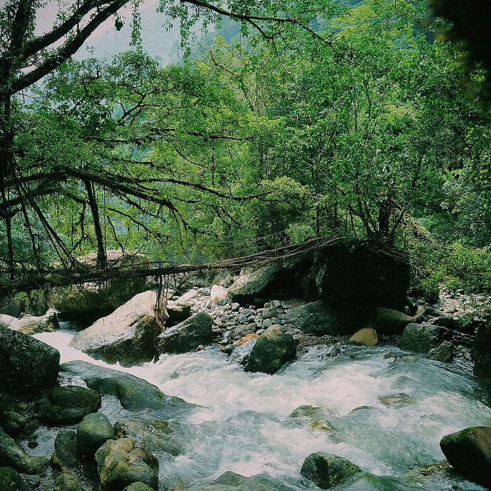
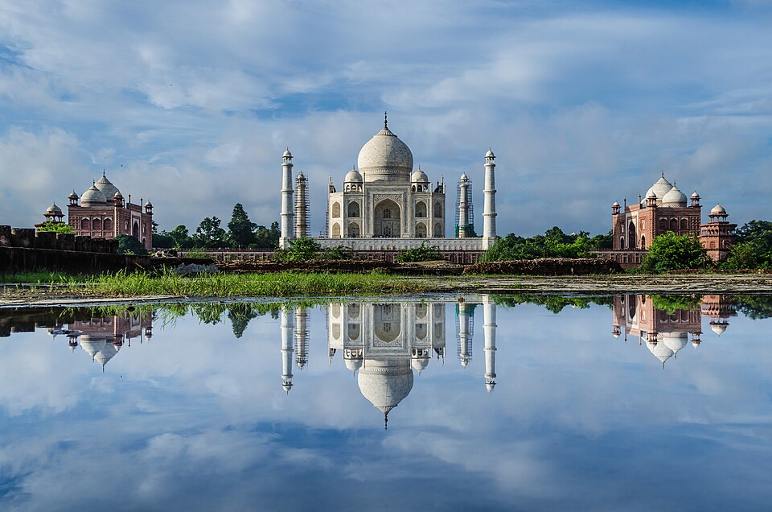
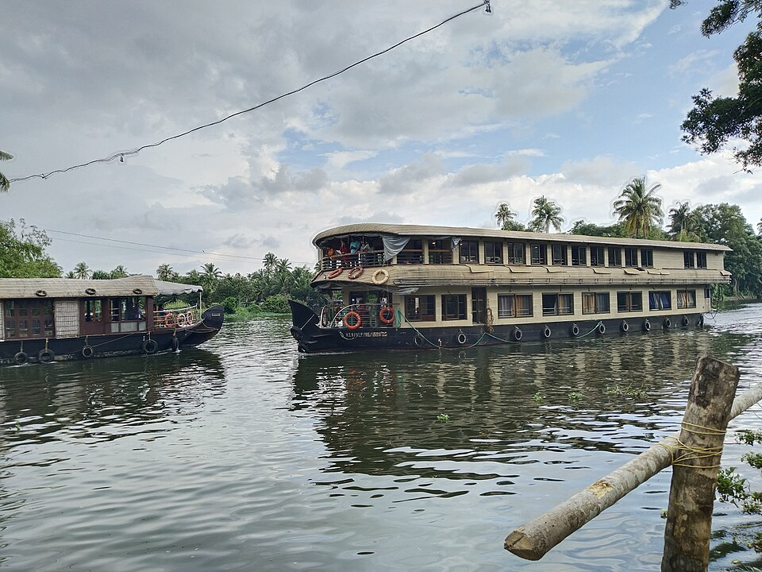
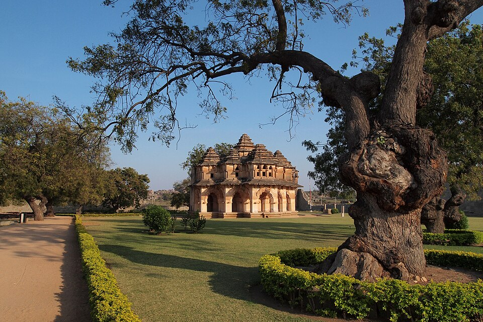
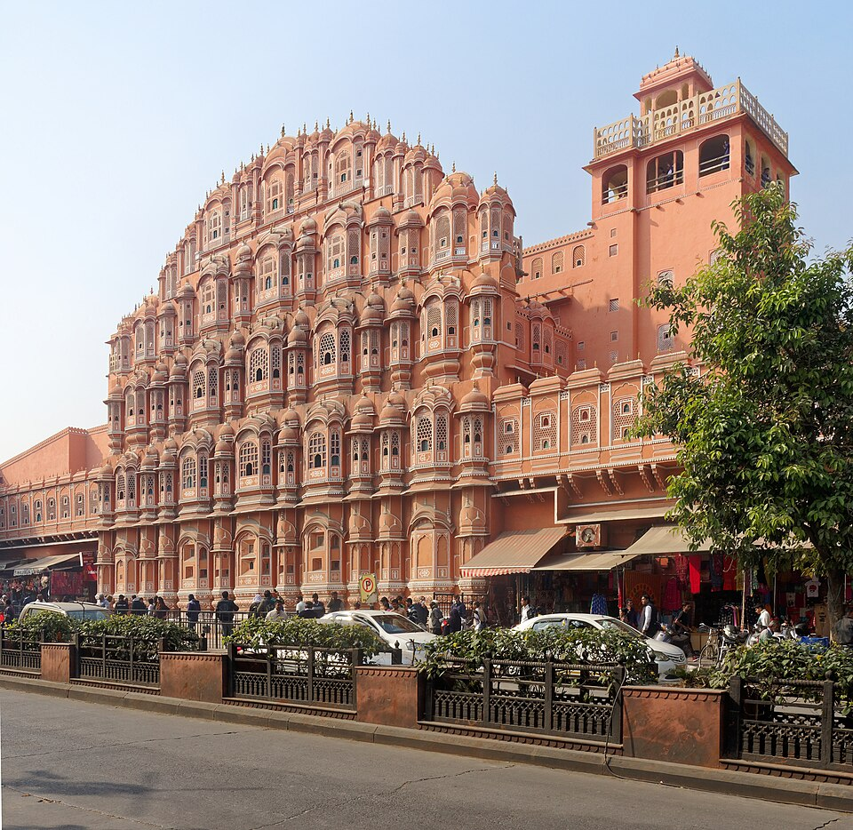
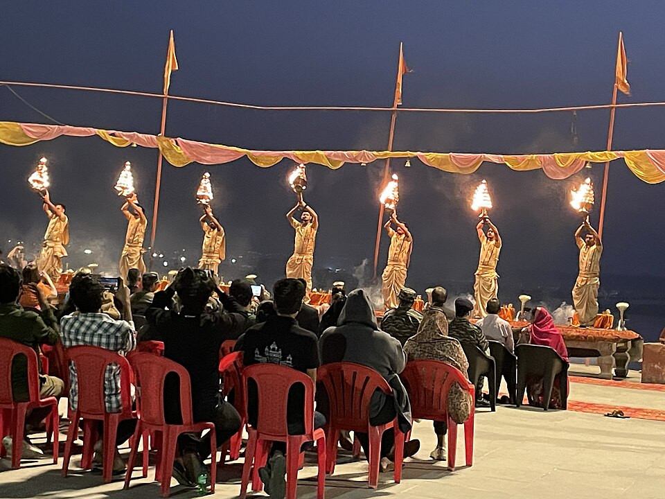

MOUNTAIN AIR · WILD HORIZONS
EXPLORE . DREAM . INDIA
Explore India. Travel Smarter. Stay Prepared.
MOUNTAIN AIR · WILD HORIZONS
Explore India. Travel Smarter. Stay Prepared.
ABOUT ME · CREATOR OF BHARAT YATRA
The mind behind BHARAT YATRA
Hi! I'm Mantu Kunda, an MCA student specializing in Cloud Computing and DevOps at Chandigarh University, with a passion for technology, innovation and exploring new possibilities.
I created BHARAT YATRA with a vision to make travelling across India smarter, easier and more informed.
I believe travelling should be more than simply choosing a destination. It should be about making better decisions, understanding possible challenges and discovering the best way to experience a journey.
Through this project, I'm combining my interest in technology, Python development, cloud computing and intelligent systems to build a platform that helps travellers plan with greater confidence.
To build an intelligent travel platform that connects India's incredible destinations with smarter travel planning, journey insights and useful technology.
Explore India. Travel Smarter. Stay Prepared.
Built with curiosity, technology and a vision to make every journey better.
— Mantu Kunda
Creator of BHARAT YATRA

GO BEYOND THE ORDINARY
From living bridges to floating islands, discover the places that feel like nowhere else.
A JOURNEY ACROSS BHARAT
From timeless monuments to lush backwaters, discover remarkable places across India.





BHARAT YATRA
Browse curated places across all 28 states and 8 Union Territories.
No matches found. Try a different search or filter.
Destination highlights are curated for discovery. Current travel conditions, availability, and costs are not provided.
.webp)
Newsletter signup will be available when the mailing service is connected. No email address is collected here.